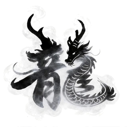

赛车刹停游戏
左刹车 · 右油门，可同时踩；超过 250 爆缸
冲过终点线，再贴近 250 米外路障停稳
1250.00m
NGEAR
000km/h
0.0KRPM
可与油门同时踩
刹车压力0%
115%
打滑线
打滑线
可分段刹车
灯灭后，再踩下
本轮报告 · 已停稳
刹停完成。
车头距路障—m
冲线时间—
制动距离—
最大刹车压力—
加速过程
车速 km/h
起步至冲线 · 白色为车速
制动过程
车速 km/h压力 %
从第一次刹车开始，含松开滑行时间；红虚线为 115% 打滑线。
本轮综合得分0距离 50% · 冲线时间 30% · 起步反应 20%